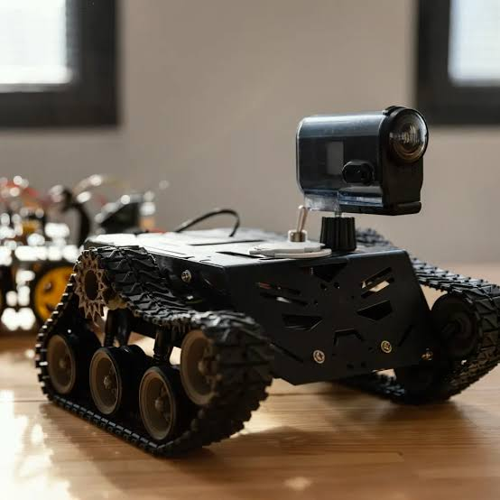
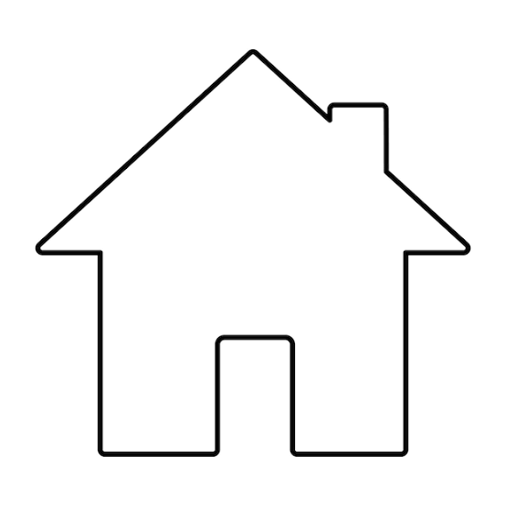

La robótica móvil es una rama de la robótica que desarrolla sistemas capaces de desplazarse y actuar de forma autónoma o semiautónoma en su entorno, mientras que la navegación es el conjunto de tecnologías que le permite al robot saber dónde está, planificar su ruta y moverse de un punto a otro de manera segura.

